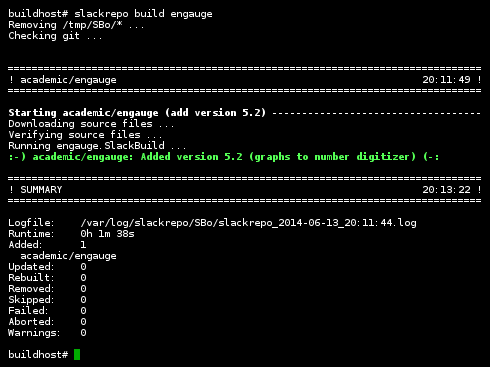
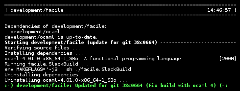
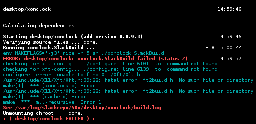
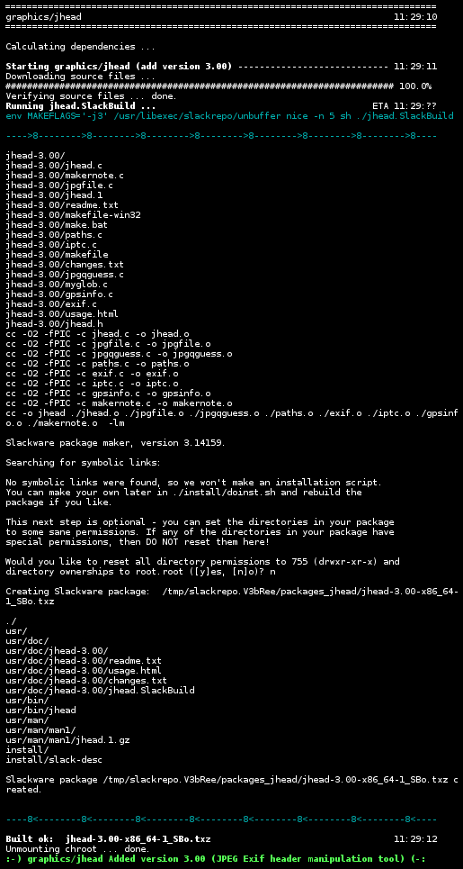

Building the package 'development/scons' from SlackBuilds.org is simple.
Just type
slackrepo build scons
When it has finished, slackrepo shows a summary of what was done.
 Dependencies are automatically built.
Dependencies are automatically built.
In this case, we want to build viking. We already have packages for scons and libgexiv2, but gpsd needs to be added.

When your existing packages in your package repository have been updated in the
upstream SlackBuild repository,
slackrepo update
will apply the updates.
 A package will automatically be rebuilt if any of its dependencies have been
updated.
A package will automatically be rebuilt if any of its dependencies have been
updated.
 When a build fails, slackrepo attempts to show significant errors from the item's log file, using an awesome regular expression devised by Eric Hameleers for his checkpkg script.
The selected errors are not always complete or relevant, but they will usually help to locate the problem. The item's log file will always contain full details.
 Use -v (--verbose) if you want to see detailed build output (like manual building, sbopkg, etc).
Build output from cmake, git, clang, mono, waf and gcc-4.9 is coloured (but if you don't like that, you can disable it). Log file output is filtered to remove the colour codes.
You can make -v the default by editing the config file,
setting VERBOSE="y".